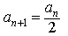
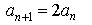
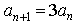
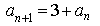
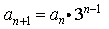

Item: tRecursiveRuleGeometric1b
Stem:
Let a1, a2, a3,
..., an, ...
be a sequence of integers. The first four terms of the sequence are given below.
2, 6, 18, 54, . . .
Select the correct rule for finding the (n+1)th term from the nth term.
Options:





Key:
- Observable: 3.
Score: 1;
Evidence Value: 1.
-
Student:Right! Good job. Starting with the second term, each term in the sequence is equal to three times the previous term.
-
Teacher:The student was able to select the correct recursive rule for generating successive terms in an increasing geometric sequence with positive integer terms.
- Observable: 1.
Score: 0;
Evidence Value: 0.
-
Student:
Sorry, that's incorrect. Try testing the equation you selected by substituting a few numbers. Suppose n = 1. Then a
n = 2. So a n+1 = 2 / 2 = 1. But a n+1 = a 2 = 6. 1 is not equal to 6, so this cannot be the correct equation.
-
Teacher:The student was not able to select the correct recursive rule for generating successive terms in an increasing geometric sequence with positive integer terms.
- Observable: 2.
Score: 0;
Evidence Value: 0.
-
Student:
Sorry, that's incorrect. Try testing the equation you selected by substituting a few numbers. Suppose n = 1. Then a
n = 2. So a n+1 = 2 * 2 = 4. But a n+1 = a 2 = 6. 4 is not equal to 6, so this cannot be the correct equation.
-
Teacher:The student was not able to select the correct recursive rule for generating successive terms in an increasing geometric sequence with positive integer terms. The student may have confused the initial term with the common ratio.
- Observable: 4.
Score: 0;
Evidence Value: 0.
-
Student:
Sorry, that's incorrect. The equation you selected suggests that each term is three more than the previous term. In this sequence, each term is
three times
the previous term.
-
Teacher:The student was not able to select the correct recursive rule for generating successive terms in an increasing geometric sequence with positive integer terms. The rule selected describes an arithmetic sequence.
- Observable: 5.
Score: 0;
Evidence Value: 0.
-
Student:
Sorry, that's incorrect. Try testing the equation you selected by substituting a few numbers. Suppose n = 1. Then a
n = 2, and 3n-1 = 30 = 1. So an+1 = 2 * 1 = 2. But an+1 = a2 = 6. 2 is not equal to 6, so this cannot be the correct equation.
-
Teacher:The student was not able to select the correct recursive rule for generating successive terms in an increasing geometric sequence with positive integer terms. The student may have confused the recursive rule for a geometric sequence with an explicit rule for a geometric sequence.
Metadata:
Item Node: tRecursiveRuleGeometric1b,
Difficulty: 1.
Proficiencies: RecursiveRuleGeometric.